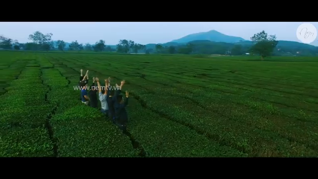
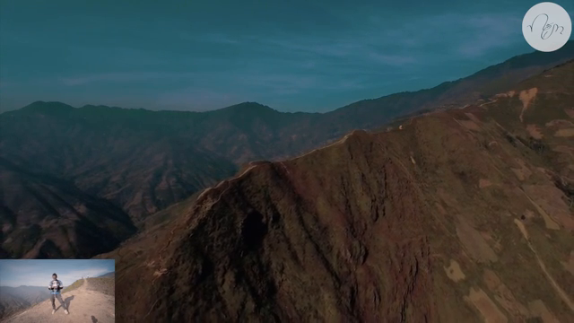
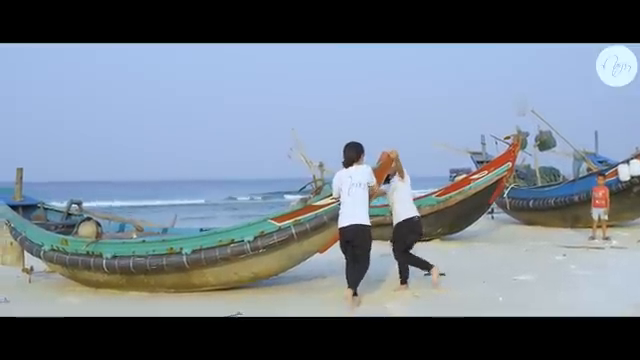
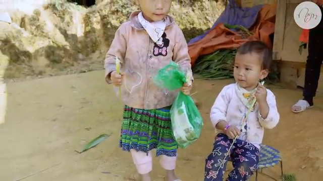
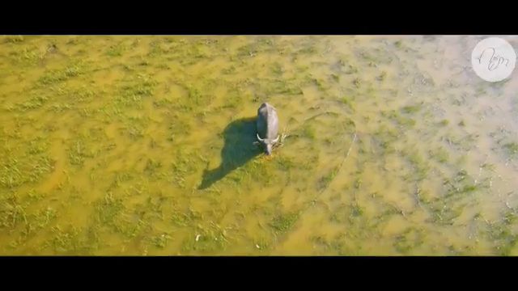
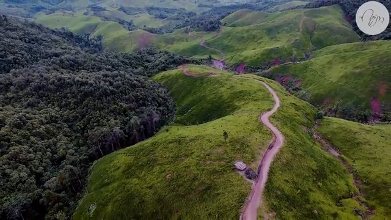
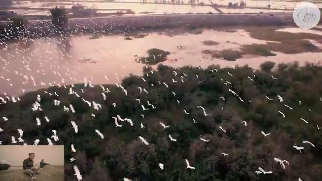
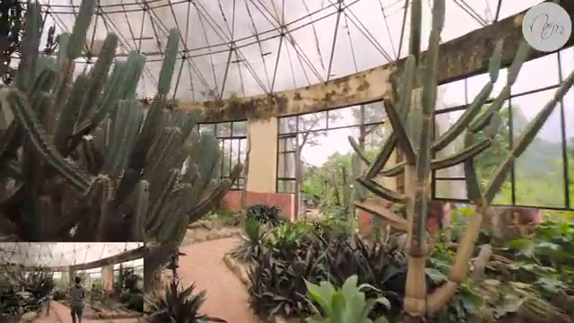
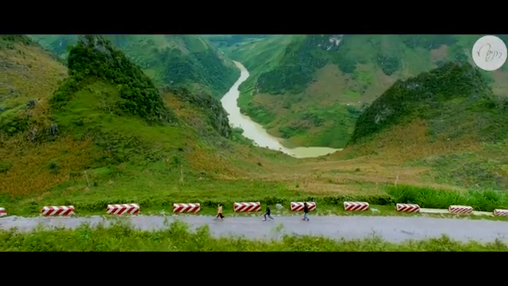
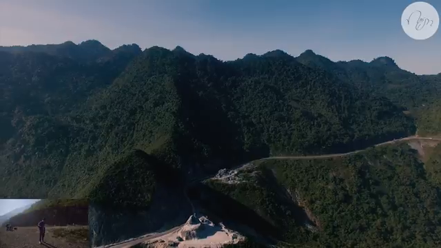

|  Conquering the clouds on a journey to Ta Xua with the team - Road Trip Vietnam Team - Nếm TV Every winter, the northern region of Vietnam attracts many photographers and cloud enthusiasts because it is the ideal time of the year to witness this breathtaking scenery. Tà Xùa in Sơn La is one of the destinations as mentioned by Nếm. On the recent 2-day-1-night trip, Nếm was thrilled to join an amazing team to capture this unforgettable moment. No more words are needed, let's enjoy this stunning video with Nếm!  Dinosaurs Spine at Hang Dong, Ta Xua, Son La seen from above Being in high demand for over 2 years now, dinosaurs spine at Hang Dong - Son La is considered as a destination not too far from Hanoi for those who want to de-stress on weekends. With an aerial view captured by a drone, Nếm hopes to provide you with a general perspective of this location.  Traveling across Quang Binh to stunning cinematic locations This video showcases the landmarks located in Quang Binh province that Nếm had the opportunity to pass through during the recent trip. We hope that through this video, you will see that our Vietnam is very beautiful. Quang Binh will undoubtedly attract more visitors due to the perfect gifts that nature has bestowed upon this place!  The Interesting Things About Pha Din Pass, Dien Bien That Just A Few People Know This is a short compilation video about Pha Din Pass, one of the four major mountain passes in northern Vietnam. However, this pass is rarely visited by people even though it is the most significant one. Have you ever been there?  Enchanted by the Beautiful City near Cambodia Border - Nếm TV Why not visit a border city between Cambodia and Vietnam like Ha Tien to experience it?
You will see the intersection of many different cultures here, from food to way of life.
Even the architecture and scenery here are extremely attractive.
Not to mention, this is one of two cities that still retains its unique bicycle rickshaw.
Let's go to Ha Tien!  Riding Motorbike Alone Across Laos - Beautiful Memories from LAOS - Nếm TV Our neighboring country Laos is truly beautiful and peaceful, suitable for those who love to wander on motorbikes, unlike Vietnam. There are 2 seasons of sunshine and rain here, with the most enjoyable being the Khơ me festival from 13-16/4. I was really impressed with Laos after that trip. I miss Laos.  Stunned by thousands of storks flying over the sky in Gia Viễn dike, Ninh Bình - Nếm TV You will definitely be amazed by the sight of thousands of storks flying in the sky in Ninh Binh, like Nếm experienced. I remember the feeling when the flycam flew in the middle of the flock of storks, both nervous and thrilled. Take a look and see if you like it.  Exploring Ba Vi's Dragon Fruit Garden [NếmTV] Yesterday, I went up there to blow some balloons but couldn't inflate any of them  Synthesize Beautiful Scenes of Ha Giang Via Super Quality Travel Video - Flycam Nem TV This video will leave you in awe, whether you have been to Ha Giang or not. Some of the places shown in the video have never been explored by the media. After watching these scenes, would you like to pack your bags and head straight to Ha Giang? Proud of you, Vietnam. There are still so many majestic landscapes that have not been fully explored. Hopefully, in the future, Ha Giang, and Vietnam as a whole, will receive more attention from international friends. If you like the video, remember to like and subscribe to support Nếm TV!  Thung Khe Pass, White Stone Slope, Hoa Binh, Flycam - Nếm TV People from both Hoa Binh and Son La are fortunate to live in such beautiful places. But have you ever admired this mountain pass from above? Try driving from Hanoi and enjoy the view while sipping a cup of coffee and eating some boiled corn. I guarantee you won't forget that feeling. |